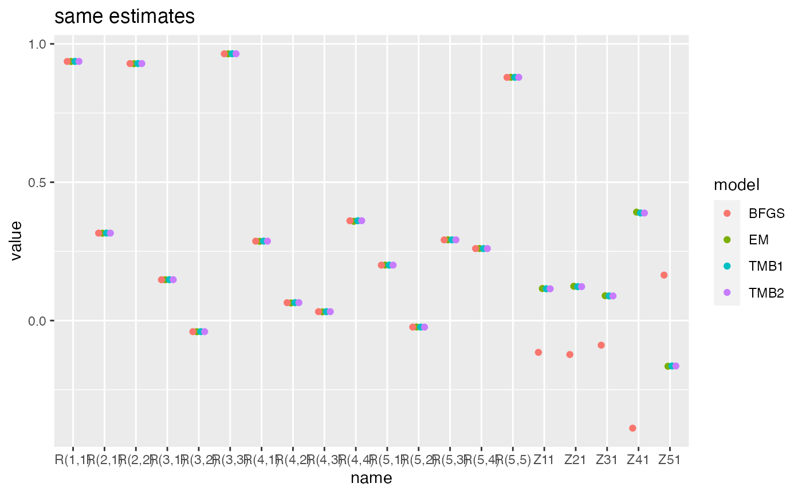

The MARSS_tmb() function allows you to fit DFAs with the
same form as MARSS(x, form="dfa"). This has a diagonal
\(\mathbf{Q}\) with 1 on the diagonal
and a stochastic \(\mathbf{x}_1\) with
mean 0 and variance of 5 (diagonal variance-covariance matrix). There
are only 3 options allowed for \(\mathbf{R}\): diagonal and equal, diagonal
and unequal, and unconstrained.
mod.list <- list(R='unconstrained', m=1, tinitx=1)Fit with MARSS
t1 <- system.time(m1 <- MARSS(dat, model=mod.list, form='dfa', z.score=FALSE, silent = TRUE))
t2<- system.time(m2 <- MARSS(dat, model=mod.list, form='dfa', z.score=FALSE, silent = TRUE, method="BFGS"))Fit with TMB.
library(marssTMB)
t3<- system.time(m3 <- dfaTMB(dat, model=list(m=1, R='unconstrained')))
t4 <- system.time(m4 <- MARSS_tmb(dat, model=mod.list))
t5 <- system.time(m5 <- MARSS_tmb(dat, model=mod.list, control=list(fun.opt="optim")))| name | time | logLik |
|---|---|---|
| MARSS-EM | 3.932 | -772.4017 |
| MARSS-BFGS | 7.295 | -772.4011 |
| dfaTMB-nlminb | 0.922 | -772.4011 |
| MARSS_tmb-nlminb | 0.545 | -772.4011 |
| MARSS_tmb-optim-BFGS | 1.742 | -880.4601 |
library(ggplot2)
dodge <- position_dodge(width=0.5)
ggplot(pars, aes(x=name, y=value, col=model)) +
geom_point(position=dodge) +
ggtitle("same estimates")
# add a temperature covariate
temp <- as.data.frame(lakeWAplanktonTrans) |>
subset(Year >= 1980 & Year <= 1989) |>
subset(select=Temp)
covar <- t(temp)
m6 <- MARSS_tmb(dat, model=list(m=1, R='diagonal and unequal'),
EstCovar = TRUE, Covars = covar)
m6$Estimates$D
# add a 2nd covariate
TP <- as.data.frame(lakeWAplanktonTrans) |>
subset(Year >= 1980 & Year <= 1989) |>
subset(select=TP)
covar <- rbind(covar, t(TP))
m_cov2_tmb <- dfaTMB(dat, model=list(m=1, R='diagonal and unequal'),
EstCovar = TRUE, Covars = covar)
m_cov2_tmb$Estimates$D